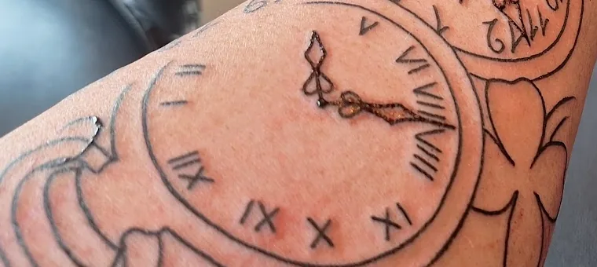

Uit de studioElke lijn heeft
Elke lijn heeft
een reden
Dit stuk werd net gezet bij Lucky 13: een zakhorloge en een klavertje vier, rond een naam en een datum die we hier bewust uit beeld laten. Kleine keuzes, één verhaal.

1 2 3 4 Vers gezet, net voor het inpakken1
Romeinse cijfersStrak verdeeld rond de hele wijzerplaat.
2
Het uur dat teltDe wijzers op het moment dat iets veranderde.
3
Een klavertje vierVoor een beetje geluk. Logisch, bij Lucky 13.
4
Het zakhorlogeMet beugel en al, in één vaste lijn getekend.